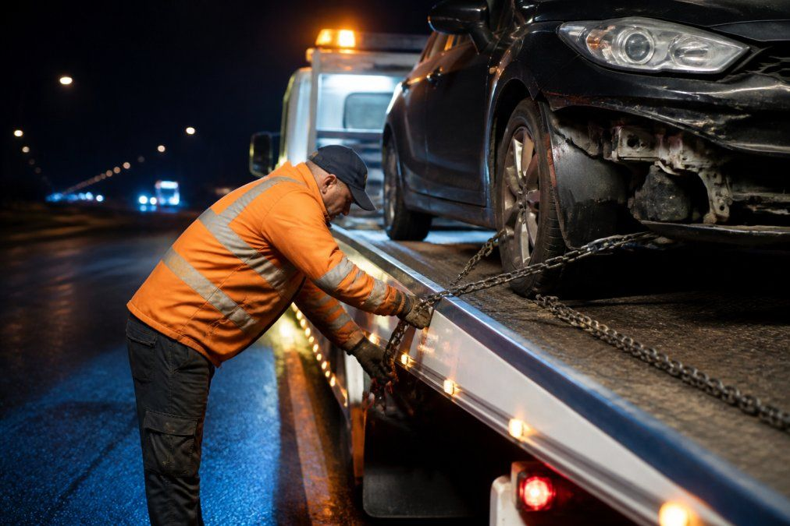
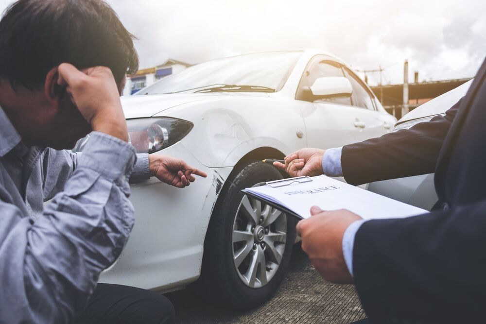
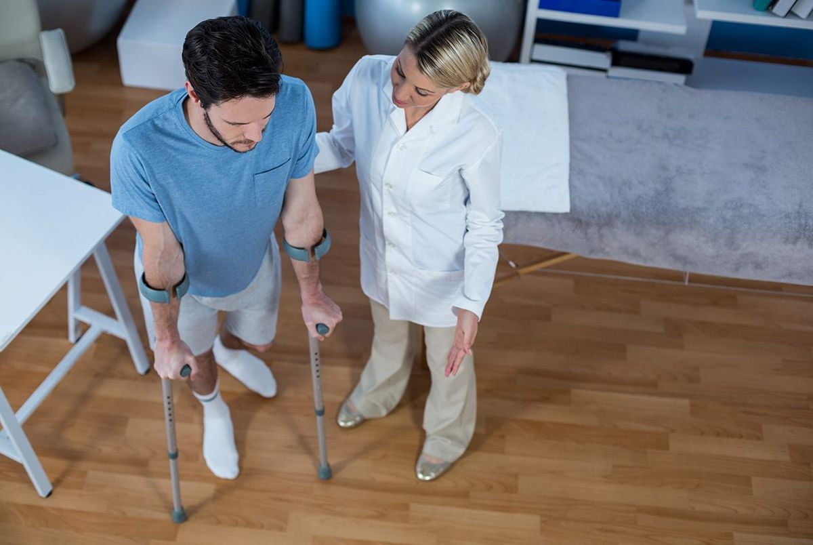

Evaluación gratuita de tu caso
Escuchamos lo que pasó, revisamos tus opciones y te decimos con honestidad si tienes un reclamo viable — sin costo y sin compromiso.
En Accident Connect te conectamos con la ayuda que necesitas después de un accidente de cualquier tipo: de auto, de moto, en el trabajo, una caída o como peatón. Cuéntanos qué pasó y te guiamos paso a paso.

Llama primero a los servicios de emergencia de tu zona (911 en EE. UU. y México). Tu seguridad y la de los demás va primero; después, contáctanos y te ayudamos con todo lo demás.
Llámanos: +1 321-438-9434Accidentes de todo tipo
Elige tu caso para ver qué puedes reclamar, qué documentos te conviene guardar y cómo te ayudamos.

Nuestros servicios
Un accidente trae gastos, papeleo y muchas dudas. Nosotros coordinamos cada parte para que tú te concentres en recuperarte.
Escuchamos lo que pasó, revisamos tus opciones y te decimos con honestidad si tienes un reclamo viable — sin costo y sin compromiso.
Te orientamos para recibir atención y rehabilitación después de tus lesiones, y para documentar bien cada visita y tratamiento.
Te ayudamos a reunir documentos, llenar formularios y presentar tu reclamo ante la aseguradora en tiempo y forma.
Trabajamos para que se reconozcan tus gastos médicos, los días de trabajo perdidos, los daños a tu vehículo y el impacto en tu vida.
Si tu caso lo necesita, te conectamos con profesionales legales que conocen los reclamos por accidentes y hablan tu idioma.
Una persona real te mantiene al tanto de tu caso, responde tus preguntas y te explica cada paso en lenguaje claro, sin tecnicismos.
Cómo funciona
No necesitas saber de leyes ni de seguros. Tú nos cuentas lo que pasó; nosotros movemos tu caso.
Llena el formulario o escríbenos. Solo necesitamos lo básico: qué pasó, cuándo y si hubo lesiones o daños.
Revisamos tu situación sin costo y te explicamos qué puedes reclamar y cuáles son los siguientes pasos.
Coordinamos atención médica, documentos y, si hace falta, acompañamiento legal para tu reclamo.
Te mantenemos informado mientras avanza tu caso, hasta buscar la compensación que te corresponde.
Por qué Accident Connect
Después de un accidente, las aseguradoras tienen a su equipo. Tú también mereces tener al tuyo.
Te atendemos en español e inglés, con paciencia y sin juzgar. Sabemos que estás pasando por un momento difícil.
Los reclamos tienen plazos. Actuar pronto protege tu caso, por eso respondemos y avanzamos sin demoras.
Te explicamos costos, tiempos y posibilidades reales desde el inicio. Sin sorpresas y sin letras pequeñas escondidas.
Tu compensación
Cada caso es distinto, pero estos son los rubros que con más frecuencia se pueden reclamar tras un accidente.
Hospital, consultas, medicamentos, terapias y rehabilitación relacionados con tus lesiones.
Los ingresos que dejaste de percibir mientras te recuperabas y no pudiste trabajar.
Reparación o valor de tu auto o moto, además de gastos de grúa y transporte mientras tanto.
El impacto físico y emocional del accidente en tu vida diaria y en tu bienestar.

Un reclamo bien documentado empieza por atender tus lesiones a tiempo. Guardar cada receta, factura y constancia médica fortalece tu caso y, sobre todo, cuida tu salud.
Si no sabes a dónde acudir o cómo pagar la atención, cuéntanos: te orientamos sobre las opciones disponibles según tu caso.
Guía práctica
Marca cada paso a medida que lo completes. Hacer esto en las primeras horas y días puede marcar la diferencia en tu reclamo.
Tu avance
0 de 7 pasos
Empieza por tu seguridad: es el paso más importante.
Preguntas frecuentes
Respuestas rápidas a las dudas más comunes después de un accidente. Si tu pregunta no está aquí, pregúntale a nuestro asistente de ayuda o llámanos: estamos 24/7.
Nada. La evaluación inicial de tu caso es gratuita y sin compromiso. En esa primera conversación te decimos si vemos un reclamo viable y cuáles serían los siguientes pasos.
Accidentes de todo tipo: choques de auto, accidentes de moto, atropellos a peatones y ciclistas, accidentes en el trabajo, caídas y resbalones en negocios o lugares públicos, y otros incidentes con lesiones o daños. Si no estás seguro de que tu caso aplique, pregúntanos: la consulta es gratis.
En muchos casos sí, pero los reclamos tienen plazos que varían según el lugar y el tipo de accidente. Por eso conviene actuar cuanto antes: cuéntanos tu caso y revisamos si aún estás a tiempo.
Ten cuidado: las primeras ofertas suelen ser menores a lo que podría corresponderte, y al aceptarlas normalmente renuncias a reclamar más adelante. Antes de firmar o aceptar, pide una evaluación gratuita de tu caso.
Sí, puedes consultarnos. Tu derecho a recibir atención y a reclamar por tus lesiones no debería depender de eso, y tratamos tu información con confidencialidad. Cuéntanos tu caso y te orientamos.
Todo lo que tengas: reporte policial o folio, fotos del accidente, datos de la otra parte y de testigos, facturas y recetas médicas, comprobantes de días no trabajados y cualquier carta o correo de la aseguradora. Si te falta algo, no te preocupes: te ayudamos a conseguirlo.
No necesitas pagar nada para pedir tu evaluación: es gratuita y sin compromiso. Antes de avanzar, te explicamos costos, tiempos y posibilidades reales desde el inicio, sin sorpresas y sin letras pequeñas escondidas.
Aún así puede haber opciones para tu caso, incluso si el otro conductor no tiene seguro vigente o se dio a la fuga. Cuéntanos qué pasó y revisamos qué reclamo se puede presentar en tu situación.
Depende de cada caso: de tus lesiones, de la aseguradora y de los documentos que haya que reunir. Cada caso se evalúa de forma individual; nosotros te mantenemos informado mientras avanza, hasta el final.
Solo lo básico: tu nombre, un teléfono o correo, el tipo de accidente, cuándo ocurrió y una breve descripción de lo que pasó y si hubo lesiones. Con eso preparamos tu evaluación gratuita desde la sección de Contacto.
Pregúntale a nuestro asistente de ayuda y te responde al instante, o llámanos y te atiende una persona real.
Contacto
Completa el formulario y preparamos tu mensaje al instante para que lo envíes por el canal que prefieras.
Trabaja con nosotros · Estamos contratando
Estamos buscando personas responsables, con buen trato y bilingües (inglés y español) para atender llamadas y correos (Gmail) de Accident Connect. Si te gusta ayudar a la gente y comunicarte en ambos idiomas, postúlate aquí mismo desde la web.
Bilingüe — Inglés y Español: Todos nuestros puestos atienden a clientes en inglés y en español. Necesitas poder hablar y escribir en ambos idiomas; en el formulario de abajo cuéntanos tu nivel en cada uno.
Serás la primera voz que escucha una persona después de un accidente, en inglés o en español. Tu trabajo es atender con calma, tomar los datos del caso y conectar a la persona con la ayuda que necesita.
Serás quien mantiene al día la bandeja de entrada (accidentconnect2@gmail.com): leer, responder y organizar los correos en inglés y en español de clientes que escriben por Gmail / correo electrónico, para que ningún caso se quede sin respuesta.
Elige el puesto, deja tus datos y cuéntanos tu disponibilidad, tu experiencia y tu nivel de inglés y español. Toma 2 minutos.
Al enviar, se prepara tu mensaje listo para copiar. Envíalo por el canal que uses con Accident Connect.
Si tu perfil encaja, el equipo te contactará para una breve conversación y explicarte los siguientes pasos y la capacitación.
Los plazos corren y las pruebas se pierden con el tiempo. Pide hoy tu evaluación gratuita y da el primer paso para recuperar lo que te corresponde.
Empezar mi caso ahoraRespuestas rápidas, en español e inglés · 24/7
Información general de esta página; no es asesoría legal ni médica. En una emergencia, llama al 911.